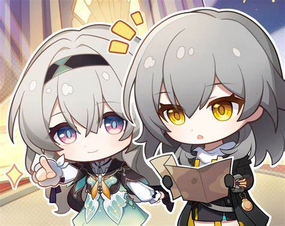
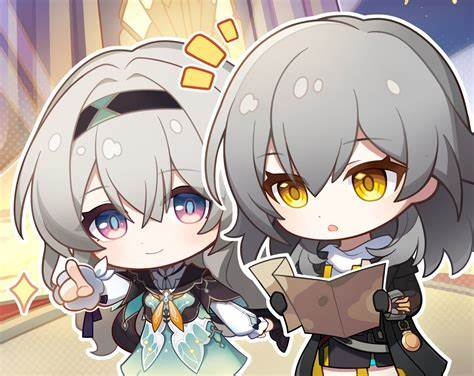

关于为什么选择前端和微光
为啥会选择前端方向，选择微光呢？具体的其实我也说不太清楚，只是有一天从地下通道出来刚好被微光的招新板砸到了，当时就决心要加入微光啦，这应该就是一种感觉和缘分吧。还有一个原因是觉得微光的蓝色logo很好看，招新群里气氛也很好,然后我就有一种特别希望能和大佬交流的感觉吧。 至于选择前端，其实自己也不太懂这几个方面，听室友稍微介绍了一下几个方面的不同，最终还是选择了这个偏交互的方面。 （还有部分原因是室友说前端对纯小白更友好一点）

为啥会选择前端方向，选择微光呢？具体的其实我也说不太清楚，只是有一天从地下通道出来刚好被微光的招新板砸到了，当时就决心要加入微光啦，这应该就是一种感觉和缘分吧。还有一个原因是觉得微光的蓝色logo很好看，招新群里气氛也很好,然后我就有一种特别希望能和大佬交流的感觉吧。 至于选择前端，其实自己也不太懂这几个方面，听室友稍微介绍了一下几个方面的不同，最终还是选择了这个偏交互的方面。 （还有部分原因是室友说前端对纯小白更友好一点）
 
